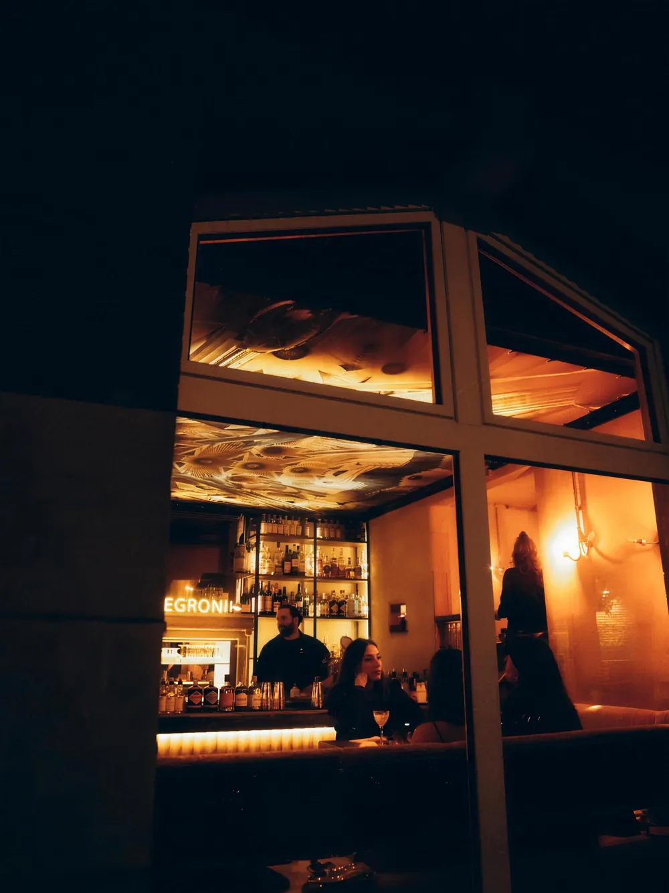
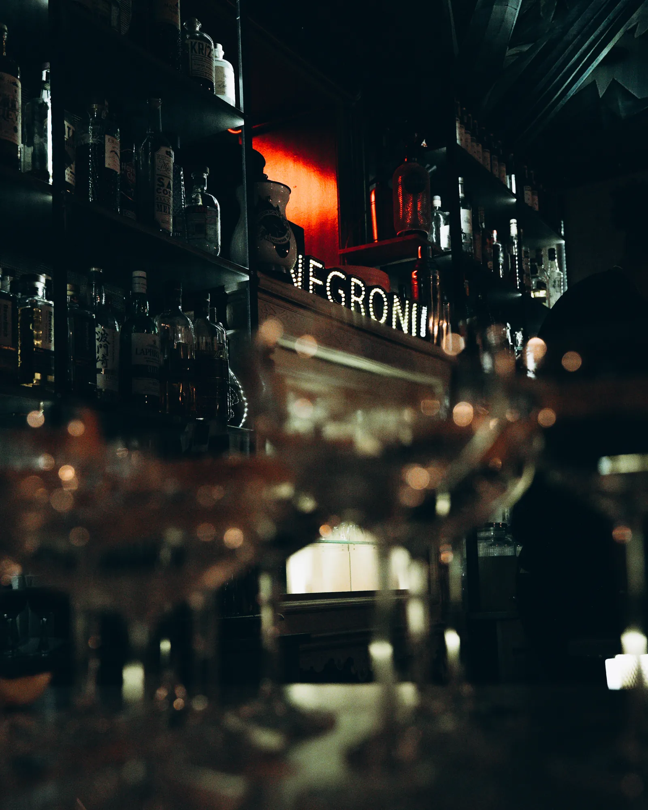
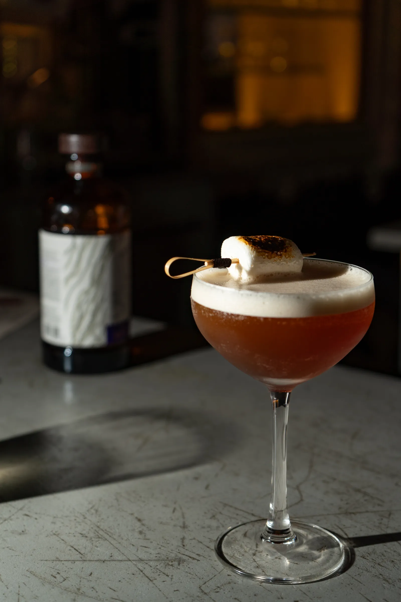
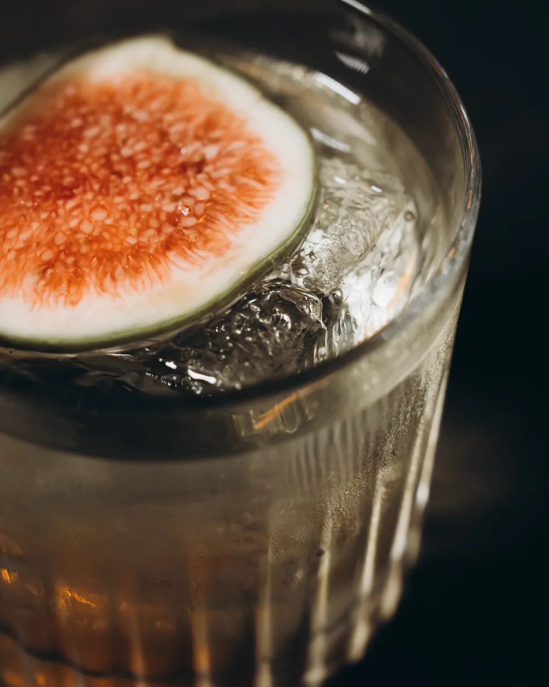

Haasemannstraße 13, Linden
Culinarium
im Walk on the Wild Side
Culinarium · Startseite · unter dem Auftakt
Gleicher Inhalt, andere Haltung: je Blick weniger Teile, grosse Bilder, viel Luft, feine Linien statt Kästen, leise Bewegung. Texte und Fotos sind die echten. Unten in der Leiste blätterst du von Fassung zu Fassung.
Die gedeckte Tafel über die ganze Fläche, darüber in grosser, feiner Schrift nur der Name. Unten zwei ruhige Spalten, getrennt von einer Haarlinie: der Abend und das Haus.
Bewegung: das Bild zieht beim Hereinscrollen langsam zurück (110 auf 100 %) · Handy: Spalten untereinander
Haasemannstraße 13, Linden
im Walk on the Wild Side
Zwei hohe Bilder randlos nebeneinander, nur eine feine Fuge dazwischen, bewusst ungleich breit: grösser der Abend, schmaler das Haus. Die Schrift liegt unten auf den Bildern wie eine Bildunterschrift in einem Bildband.
Bewegung: die beiden Bilder gleiten in ihrem Rahmen leicht gegeneinander · Handy: zwei Bilder untereinander
Der Abend und sein Haus
Eine aufgeschlagene Doppelseite: links warmes Papier mit dunkler Schrift und einer grossen Initiale wie in einem gedruckten Menü, rechts randlos das Foto. Das Haus steht unten als Fussnote. Hell gegen dunkel, wirkt wie Druck, nicht wie Website.
Bewegung: das Foto zieht beim Hereinscrollen langsam zurück · Handy: Foto oben, Seite darunter
Culinarium
Ein Menü mit fünf passenden Drinks, für vierzehn Gäste an einem Tisch, an einzelnen Wochenenden. Jeder Drink gehört zu seinem Teller.
Freitag ab 19:00 · Samstag ab 17:00 · zuletzt 89,00 EUR
Der AbendZu Gast im Walk on the Wild Side, einer Mixology-Bar ohne Karte, Haasemannstraße 13 in Linden. Die Bar: Donnerstag bis Samstag ab 19 Uhr.
Das Haus
Ein einziges hohes Bild im Rundbogen, mit einer feinen goldenen Linie im Abstand nachgezogen. Links davon der Abend, rechts das Haus, beide als kurze Textblöcke auf Augenhöhe mit dem Bild.
Bewegung: das Bild im Bogen zieht von 112 auf 100 % · Handy: Bogen oben, Texte darunter
Haasemannstraße 13, Linden
In der Mitte wie auf einer gestochenen Menükarte: der Name, darunter «Ein Menü, fünf Drinks, vierzehn Plätze» mit kleinen Rauten dazwischen. Links und rechts laufen zwei Bilder aus dem Rand herein und lösen sich zur Mitte hin weich im Dunkel auf.
Bewegung: die beiden Randbilder wandern leicht gegenläufig · Handy: Randbilder treten zurück, Text bleibt


Die leuchtenden Fenster der Bar füllen die ganze Fläche. Unten links liegt eine schwere dunkle Platte mit einer feinen Goldlinie innen, darauf beide Texte, getrennt durch eine Haarlinie. Wie eine Karte, die man auf den Tisch gelegt bekommt.
Bild: die Fenster der Bar bei Nacht · Bewegung: das Bild gleitet langsam hinter der Platte · Handy: Platte über die ganze Breite

Der Abend
Ein Menü mit fünf passenden Drinks an einer langen Tafel für vierzehn Gäste, an einzelnen Wochenenden.
Freitag ab 19:00 · Samstag ab 17:00 · zuletzt 89,00 EUR
Der AbendDas Haus
Walk on the Wild Side, Mixology-Bar ohne Karte, Haasemannstraße 13. Donnerstag bis Samstag ab 19 Uhr.
Das HausEin Weg von oben nach unten: klein das Schild der Bar, eine feine Goldlinie führt hinunter, unten öffnet sich das grosse Bild der Tafel. Erst das Haus, dann der Abend, ganz ohne Kästen.
Bewegung: die Linie zieht sich beim Scrollen nach unten auf · Handy: gleich, schmaler

Walk on the Wild Side · Haasemannstraße 13

Breitwand im Kinoformat 2,39 : 1 auf tiefem Schwarz. Darüber eine Zeile wie im Vorspann, darunter der Name gross wie ein Filmtitel und eine einzige Zeile Erklärung.
Bewegung: das Bild zieht beim Hereinscrollen langsam zurück · Handy: gleich, Format bleibt
Im Walk on the Wild Side, Haasemannstraße 13

Ein heller Raum wie eine Galerie: das grosse Foto des Abends im Passepartout mit schmalem dunklem Rahmen, darunter versetzt ein kleineres Bild der Bar. Daneben der Text wie eine Museumstafel. Setzt nach dem dunklen Auftakt einen klaren, edlen Wechsel.
Bewegung: die beiden Rahmen schweben leicht gegeneinander · Handy: Rahmen und Text untereinander
Drei Spalten wie in einem Theater-Programmheft, getrennt von feinen senkrechten Linien: links der Titel und der Abend, in der Mitte ein hohes Bild, rechts schmal das Haus mit eigenem Bild.
Bewegung: das mittlere Bild zieht beim Hereinscrollen langsam zurück · Handy: Spalten untereinander
Programm
Ein Menü mit fünf passenden Drinks an einer langen Tafel für vierzehn Gäste, an einzelnen Wochenenden.
Freitag ab 19:00
Samstag ab 17:00
zuletzt 89,00 EUR


Das Haus
Walk on the Wild Side, Mixology-Bar ohne Karte, Haasemannstraße 13. Donnerstag bis Samstag ab 19 Uhr.
Das HausZuerst nur Schrift, gross und linksbündig, Zeile für Zeile. Danach ein Breitbild über die ganze Breite und zwei ruhige Spalten. Ein Moment, dann Stille.
Bewegung: die Zeilen steigen nacheinander in ihre Lage (nur Weg, von Anfang an lesbar) · Handy: Satz bricht um, alles untereinander

Links das Haus, zuerst schwarz-weiss, rechts gross und warm der Abend. Beim Scrollen bekommt die Bar ihre Farbe: Das Licht geht an, sobald man ankommt.
Bewegung: das Barbild wechselt von Schwarz-Weiss zu Farbe (nur Deckkraft) · Handy: untereinander
Haasemannstraße 13, Linden
Ein grosses rundes Bild, umgeben von einem warmen Schein wie von einer Kerze, mit feinem Goldring. Darunter zwei Spalten: der Abend und das Haus.
Bewegung: der Schein atmet ganz langsam (nur Deckkraft) · Handy: Kreis über die Breite, Spalten untereinander
Haasemannstraße 13, Linden

Die Fläche bleibt stehen. Links ruhiger Text, rechts ein grosses Bild bis an den Rand. Beim Scrollen wechselt beides weich: erst der Abend an der Tafel, dann das Haus an der Theke. Eine feine Linie zeigt, wo man ist.
Bewegung: Tausch von Bild und Text (nur Deckkraft und Weg) · Handy: Text oben, Bild darunter
Ein Menü mit fünf passenden Drinks an einer langen Tafel für vierzehn Gäste, an einzelnen Wochenenden.
Freitag ab 19:00 · Samstag ab 17:00 · zuletzt 89,00 EUR
Der AbendDas Haus von Culinarium: eine Mixology-Bar ohne Karte, Haasemannstraße 13 in Linden.
Donnerstag bis Samstag ab 19 Uhr
Das HausDrei Bilder in drei Grössen steigen schräg ab: gross die Tafel, mittel ein Glas, klein die Theke. Die Texte stehen in den freien Flächen dazwischen. Wie eine Doppelseite in einem Magazin, mit viel Luft.
Bewegung: die beiden kleineren Bilder wandern mit unterschiedlichem Tempo · Handy: Bilder und Texte untereinander, versetzt
Haasemannstraße 13, Linden


Der Abend
Ein Menü mit fünf passenden Drinks an einer langen Tafel für vierzehn Gäste, an einzelnen Wochenenden.
Der AbendEnde der zweiten Runde. Sag mir die Nummer.